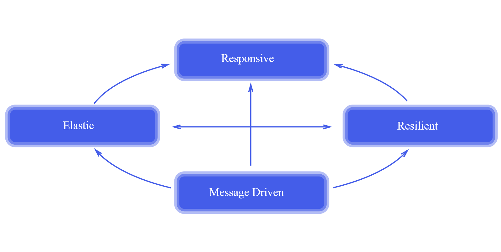
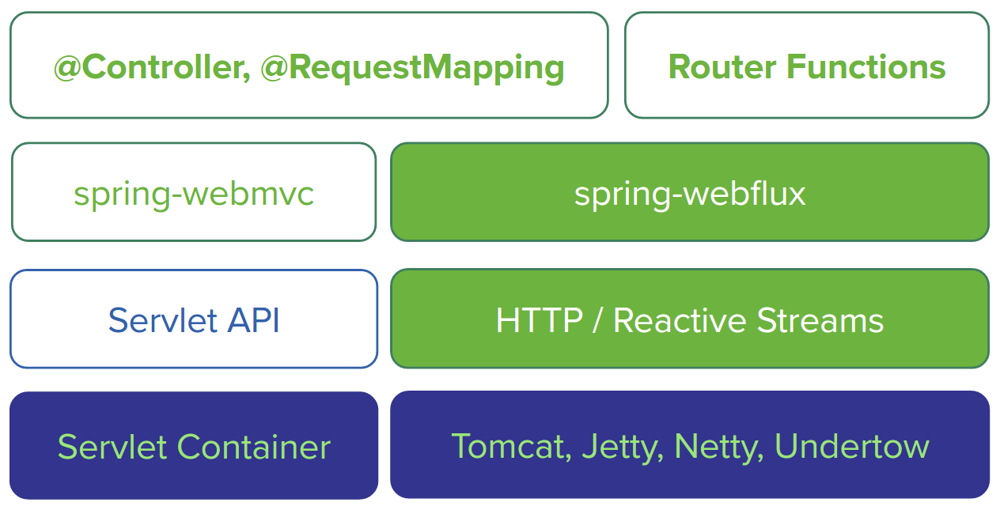

<!DOCTYPE HTML>
<html>
<head><meta name="generator" content="Hexo 3.9.0">
  <meta charset="utf-8">
  <meta http-equiv="X-UA-Compatible" content="IE=edge">
  <meta name="apple-mobile-web-app-capable" content="yes">
  <meta name="apple-mobile-web-app-status-bar-style" content="black">
  <meta name="google-site-verification" content>
  
  <title>【Spring 5】响应式Web框架前瞻</title>
  <meta name="author" content="Emac">
   <meta name="description" content="引子：被誉为“中国大数据第一人”的涂子沛先生在其成名作《数据之巅》里提到，摩尔定律、社交媒体、数据挖掘是大数据的三大成因。IBM的研究称，整个人类文明所获得的全部数据中，有90%是过去两年内产生的。在此背景下，包括NoSQL，Hadoop, Spark, Storm, Kylin在内的大批新技术应运">
  

  <meta property="og:title" content="【Spring 5】响应式Web框架前瞻">
  <meta name="viewport" content="width=device-width, initial-scale=1, maximum-scale=1">
  <meta property="og:site_name" content="Emac">
 <meta property="og:image" content="undefined">
  
  <link href="/apple-touch-icon-precomposed.png" sizes="180x180" rel="apple-touch-icon-precomposed">
  <link rel="alternate" href="/atom.xml" title="Emac" type="application/atom+xml">
  <link rel="stylesheet" href="//cdn.bootcss.com/bootstrap/3.3.6/css/bootstrap.min.css">
  <link rel="stylesheet" href="//cdn.bootcss.com/font-awesome/4.5.0/css/font-awesome.min.css">
  <link rel="stylesheet" href="/css/m.min.css">
  <link rel="icon" type="image/x-icon" href="/favicon.ico">
</head>
</html>
<body>
  <div id='wx_pic' style='display:none;'></div>
  <div id="main">
    <div class="behind">
      <div class="back">
        <a href="/" class="black-color"><i class="fa fa-times" aria-hidden="true"></i></a>
      </div>
      <div class="description">
        &nbsp;拾贝
      </div>
    </div>
    <div class="container">
      

  <article class="standard post">
    <div class="title">
      
  
    <h1 class="page-title center">
        【Spring 5】响应式Web框架前瞻
    </h1>
  


    </div>
    <div class="meta center">
      
<time datetime="2017-05-29T16:00:00.000Z">
  <i class="fa fa-calendar"></i>&nbsp;
  2017-05-30
</time>


    
    &nbsp;
    <i class="fa fa-tag"></i>&nbsp;
    <a href="/categories/backend/">backend</a>


    
    &nbsp;
    <i class="fa fa-tag"></i>&nbsp;
    <a href="/tags/原创/">原创</a>·<a href="/tags/Spring/">Spring</a>·<a href="/tags/Reactive/">Reactive</a>


    </div>
    <hr>
    <div class="picture-container">
      
    </div>
    <blockquote>
<p>引子：被誉为“中国大数据第一人”的涂子沛先生在其成名作《数据之巅》里提到，摩尔定律、社交媒体、数据挖掘是大数据的三大成因。IBM的研究称，整个人类文明所获得的全部数据中，有90%是过去两年内产生的。在此背景下，包括NoSQL，Hadoop, Spark, Storm, Kylin在内的大批新技术应运而生。其中以<a href="https://github.com/ReactiveX/RxJava" target="_blank" rel="noopener">RxJava</a>和<a href="http://projectreactor.io/" target="_blank" rel="noopener">Reactor</a>为代表的响应式（Reactive）编程技术针对的就是经典的大数据4V定义（Volume，Variety，Velocity，Value）中的Velocity，即高并发问题，而在即将发布的Spring 5中，也引入了响应式编程的支持。在接下来的几周，我会围绕响应式编程分三期与你分享我的一些学习心得。作为第一篇，首先从Spring 5谈起。</p>
</blockquote>
<h2 id="1-响应式宣言"><a href="#1-响应式宣言" class="headerlink" title="1 响应式宣言"></a>1 响应式宣言</h2><p>和<a href="http://agilemanifesto.org/" target="_blank" rel="noopener">敏捷宣言</a>一样，说起响应式编程，必先提到响应式宣言。</p>
<blockquote>
<p>We want systems that are Responsive, Resilient, Elastic and Message Driven. We call these Reactive Systems. - <a href="http://www.reactivemanifesto.org" target="_blank" rel="noopener">The Reactive Manifesto</a></p>
</blockquote>
<p></p>
<p><em>图片出处：<a href="http://www.reactivemanifesto.org/" target="_blank" rel="noopener">The Reactive Manifesto</a></em></p>
<p>不知道是不是为了向敏捷宣言致敬，响应式宣言中也包含了4组关键词：</p>
<ul>
<li>Responsive: 可响应的。要求系统尽可能做到在任何时候都能及时响应。</li>
<li>Resilient: 可恢复的。要求系统即使出错了，也能保持可响应性。</li>
<li>Elastic: 可伸缩的。要求系统在各种负载下都能保持可响应性。</li>
<li>Message Driven: 消息驱动的。要求系统通过异步消息连接各个组件。</li>
</ul>
<p>可以看到，对于任何一个响应式系统，首先要保证的就是可响应性，否则就称不上是响应式系统。从这个意义上来说，动不动就蓝屏的Windows系统显然不是一个响应式系统。</p>
<p>PS: 如果你赞同响应式宣言，不妨到<a href="http://www.reactivemanifesto.org" target="_blank" rel="noopener">官网</a>上留下的你电子签名，我的编号是18989，试试看能不能找到我。</p>
<h2 id="2-Spring-5前瞻"><a href="#2-Spring-5前瞻" class="headerlink" title="2 Spring 5前瞻"></a>2 Spring 5前瞻</h2><p>作为Java世界首个响应式Web框架，Spring 5最大的亮点莫过于提供了完整的端到端响应式编程的支持。</p>
<p></p>
<p><em>图片出处：<a href="http://docs.spring.io/spring/docs/5.0.0.BUILD-SNAPSHOT/spring-framework-reference/htmlsingle/" target="_blank" rel="noopener">Spring Framework Reference Documentation</a></em></p>
<p>左侧是传统的基于Servlet的Spring Web MVC框架，右侧是5.0版本新引入的基于Reactive Streams的Spring WebFlux框架，从上到下依次是Router Functions，WebFlux，Reactive Streams三个新组件。</p>
<ul>
<li>Router Functions: 对标@Controller，@RequestMapping等标准的Spring MVC注解，提供一套函数式风格的API，用于创建Router，Handler和Filter。</li>
<li>WebFlux: 核心组件，协调上下游各个组件提供响应式编程支持。</li>
<li><a href="http://www.reactive-streams.org/" target="_blank" rel="noopener">Reactive Streams</a>: 一种支持背压（Backpressure）的异步数据流处理标准，主流实现有RxJava和Reactor，Spring WebFlux默认集成的是Reactor。</li>
</ul>
<p>在Web容器的选择上，Spring WebFlux既支持像Tomcat，Jetty这样的的传统容器（前提是支持Servlet 3.1 Non-Blocking IO API），又支持像Netty，Undertow那样的异步容器。不管是何种容器，Spring WebFlux都会将其输入输出流适配成<code>Flux&lt;DataBuffer&gt;</code>格式，以便进行统一处理。</p>
<p>值得一提的是，除了新的Router Functions接口，Spring WebFlux同时支持使用老的Spring MVC注解声明Reactive Controller。和传统的MVC Controller不同，Reactive Controller操作的是非阻塞的ServerHttpRequest和ServerHttpResponse，而不再是Spring MVC里的HttpServletRequest和HttpServletResponse。</p>
<p>下面是我GitHub上的示例工程里的一个<a href="https://github.com/emac/spring5-features-demo/blob/master/src/main/java/cn/emac/demo/spring5/reactive/controllers/RestaurantController.java" target="_blank" rel="noopener">例子</a>，</p>
<figure class="highlight java"><table><tr><td class="gutter"><pre><span class="line">1</span><br><span class="line">2</span><br><span class="line">3</span><br><span class="line">4</span><br><span class="line">5</span><br><span class="line">6</span><br><span class="line">7</span><br><span class="line">8</span><br><span class="line">9</span><br><span class="line">10</span><br><span class="line">11</span><br><span class="line">12</span><br><span class="line">13</span><br><span class="line">14</span><br><span class="line">15</span><br><span class="line">16</span><br><span class="line">17</span><br><span class="line">18</span><br><span class="line">19</span><br><span class="line">20</span><br><span class="line">21</span><br><span class="line">22</span><br><span class="line">23</span><br><span class="line">24</span><br><span class="line">25</span><br><span class="line">26</span><br><span class="line">27</span><br><span class="line">28</span><br><span class="line">29</span><br><span class="line">30</span><br></pre></td><td class="code"><pre><span class="line"><span class="meta">@RestController</span></span><br><span class="line"><span class="keyword">public</span> <span class="class"><span class="keyword">class</span> <span class="title">RestaurantController</span> </span>&#123;</span><br><span class="line"></span><br><span class="line">    <span class="keyword">private</span> <span class="keyword">final</span> RestaurantRepository restaurantRepository;</span><br><span class="line"></span><br><span class="line">    <span class="keyword">private</span> <span class="keyword">final</span> ReactiveMongoTemplate reactiveMongoTemplate;</span><br><span class="line"></span><br><span class="line">    <span class="function"><span class="keyword">public</span> <span class="title">RestaurantController</span><span class="params">(RestaurantRepository restaurantRepository, ReactiveMongoTemplate reactiveMongoTemplate)</span> </span>&#123;</span><br><span class="line">        <span class="keyword">this</span>.restaurantRepository = restaurantRepository;</span><br><span class="line">        <span class="keyword">this</span>.reactiveMongoTemplate = reactiveMongoTemplate;</span><br><span class="line">    &#125;</span><br><span class="line"></span><br><span class="line">    <span class="meta">@GetMapping</span>(<span class="string">"/reactive/restaurants"</span>)</span><br><span class="line">    <span class="function"><span class="keyword">public</span> Flux&lt;Restaurant&gt; <span class="title">findAll</span><span class="params">()</span> </span>&#123;</span><br><span class="line">        <span class="keyword">return</span> restaurantRepository.findAll();</span><br><span class="line">    &#125;</span><br><span class="line"></span><br><span class="line">    <span class="meta">@GetMapping</span>(<span class="string">"/reactive/restaurants/&#123;id&#125;"</span>)</span><br><span class="line">    <span class="function"><span class="keyword">public</span> Mono&lt;Restaurant&gt; <span class="title">get</span><span class="params">(@PathVariable String id)</span> </span>&#123;</span><br><span class="line">        <span class="keyword">return</span> restaurantRepository.findById(id);</span><br><span class="line">    &#125;</span><br><span class="line"></span><br><span class="line">    <span class="meta">@PostMapping</span>(<span class="string">"/reactive/restaurants"</span>)</span><br><span class="line">    <span class="function"><span class="keyword">public</span> Flux&lt;Restaurant&gt; <span class="title">create</span><span class="params">(@RequestBody Restaurant[] restaurants)</span> </span>&#123;</span><br><span class="line">        <span class="keyword">return</span> Flux.just(restaurants)</span><br><span class="line">                .log()</span><br><span class="line">                .flatMap(r -&gt; Mono.just(r).subscribeOn(Schedulers.parallel()), <span class="number">10</span>)</span><br><span class="line">                .flatMap(reactiveMongoTemplate::insert);</span><br><span class="line">    &#125;</span><br><span class="line">&#125;</span><br></pre></td></tr></table></figure>
<h2 id="3-小结"><a href="#3-小结" class="headerlink" title="3 小结"></a>3 小结</h2><p>除了响应式编程支持，Spring 5还包括了很多Java程序员期待已久的特性，包括JDK 9，<a href="http://emacoo.cn/arch/junit5/">Junit 5</a>，Servlet 4以及HTTP/2支持。目前Spring 5的最新版本是<a href="https://spring.io/blog/2017/05/08/spring-framework-5-0-goes-rc1" target="_blank" rel="noopener">RC1</a>，而Spring Boot也刚刚发布了<a href="https://spring.io/blog/2017/05/16/spring-boot-2-0-0-m1-available-now" target="_blank" rel="noopener">2.0.0 M1</a>版本。根据Spring<a href="https://spring.io/blog/2015/12/03/spring-framework-5-0-roadmap-update" target="_blank" rel="noopener">官方博客</a>，Spring 5将在JDK 9 <a href="http://www.java9countdown.xyz/" target="_blank" rel="noopener">GA</a>之后随即发布，也就是今年的7月底前后。</p>
<p>以上就是我对Spring 5中有关响应式编程支持的一些简单介绍，欢迎你到我的<a href="https://github.com/emac/emac.github.io/issues/2" target="_blank" rel="noopener">留言板</a>分享，和大家一起过过招。下一篇我将聊一下我对响应式编程的一些理解，敬请期待。</p>
<h2 id="4-参考"><a href="#4-参考" class="headerlink" title="4 参考"></a>4 参考</h2><ul>
<li><a href="https://spring.io/blog/2016/09/22/new-in-spring-5-functional-web-framework" target="_blank" rel="noopener">New in Spring 5: Functional Web Framework</a></li>
<li><a href="https://www.slideshare.net/InfoQ/spring-framework-5-preview-roadmap" target="_blank" rel="noopener">Spring Framework 5 - Preview &amp; Roadmap</a></li>
<li><a href="https://www.slideshare.net/AliakseiZhynhiarousk/spring-framework-5-history-and-reactive-features" target="_blank" rel="noopener">Spring Framework 5: History and Reactive features</a></li>
</ul>


  </article>
  </script>


    </div>
  </div>
  <footer class="page-footer"><div class="clearfix">
</div>
<div class="right-foot container">
    <div class="firstrow">
        <a href="#top" >
        <i class="fa fa-arrow-right"></i>
        </a>
        © emacoo.cn 2015-2021
    </div>
    <div class="secondrow">
        <a href="https://github.com/gaoryrt/hexo-theme-pln">
        
        </a>
    </div>
</div>
<div class="clearfix">
</div>
<script async src="//busuanzi.ibruce.info/busuanzi/2.3/busuanzi.pure.mini.js"></script>
<div class="busuanzi center">
    <span id="busuanzi_container_site_pv">本站总访问量<span id="busuanzi_value_site_pv"></span>次</span>
    <span id="busuanzi_container_site_uv">本站访客数<span id="busuanzi_value_site_uv"></span>人次</span>
    <span id="busuanzi_container_page_pv">
      本文总阅读量<span id="busuanzi_value_page_pv"></span>次
    </span>
</div>
</footer>
  <script src="//cdn.bootcss.com/jquery/2.2.1/jquery.min.js"></script>
<script src="/js/search.js"></script>
<script type="text/javascript">

// comments below to disable loading animation
function revealOnScroll() {
  var scrolled = $(window).scrollTop();
  $(".excerpt, .index-title, .index-meta, p").each(function() {
    var current = $(this),
      height = $(window).outerHeight(),
      offsetTop = current.offset().top;
    (scrolled + height + 50 > offsetTop) ? current.addClass("animation"):'';
  });
}
$(window).on("scroll", revealOnScroll);
$(document).ready(revealOnScroll)

// disqus scripts


// dropdown scripts
$(".dropdown").click(function(event) {
  var current = $(this);
  event.stopPropagation();
  $(current).children(".dropdown-content")[($(current).children(".dropdown-content").hasClass("open"))?'removeClass':'addClass']("open")
});
$(document).click(function(){
    $(".dropdown-content").removeClass("open");
})

// back to top scripts
$("a[href='#top']").click(function() {
  $("html, body").animate({ scrollTop: 0 }, 500);
  return false;
});


var path = "/search.xml";
searchFunc(path, 'local-search-input', 'local-search-result');

</script>

</body>
</html>
